ORBISRègles de confidentialité
Dernière mise à jour : 12 novembre 2026.
À quoi sert l'application ORBIS
ORBIS est un outil interne de production vidéo. Il fabrique les vidéos de la chaîne ORBIS et les envoie sur le compte Google Drive et la chaîne YouTube d'ORBIS. Il n'est pas proposé au public et ne sert à aucun autre utilisateur.
Données Google utilisées
- Google Drive : uniquement les fichiers créés par ORBIS (ses vidéos et visuels), pour les ranger dans un dossier ORBIS.
- YouTube : l'envoi des vidéos d'ORBIS sur sa propre chaîne, et la lecture des statistiques de cette chaîne pour suivre ses résultats.
Ce que nous ne faisons pas
- Nous ne collectons aucune donnée personnelle de visiteurs ou de spectateurs.
- Nous ne vendons, ne partageons et ne transférons aucune donnée à des tiers.
- Nous n'utilisons pas les données Google pour de la publicité.
Conservation et suppression
Les autorisations peuvent être retirées à tout moment depuis la page « Sécurité » du compte Google (myaccount.google.com/permissions). Les jetons d'accès sont stockés de façon chiffrée dans l'environnement de production et ne sont jamais publiés.
L'utilisation des données reçues des API Google respecte le règlement sur les données utilisateur des services d'API Google, y compris les exigences d'utilisation limitée.
Contact
orbis.histoire@gmail.com